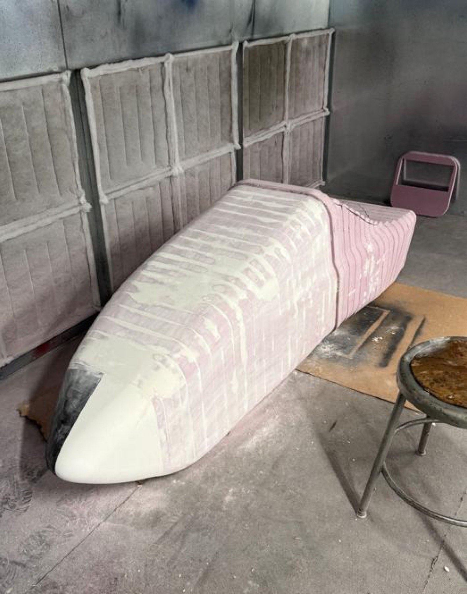
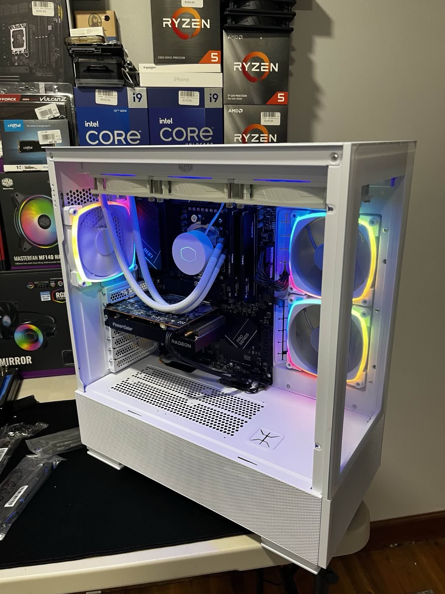
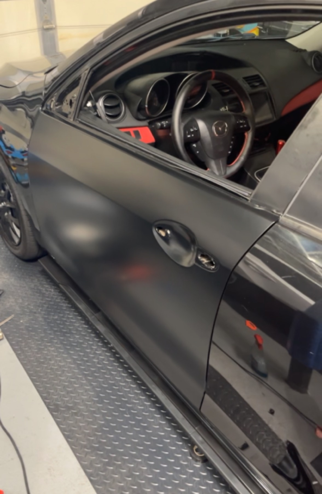

Every build in one place — what's on the bench now, and what already shipped. Guides go up as each one is finished.
A fully autonomous rear wing that shifts angle of incidence in real time — no driver input, self-contained.
A go-kart rebuilt into an autonomous platform — drive-by-wire, sensor fusion, ROS 2.

Moulded composite nose, surfaced in CAD and laid up from 3D-printed tooling.

A custom PC build service I ran end to end — specs, assembly, and delivery.

Wraps, tint, upholstery and autobody work across a run of personal builds and flips.
No builds match that filter.
Submit a project concept and it might become the next full build guide on this site. You'll be credited, and the guide will be free.